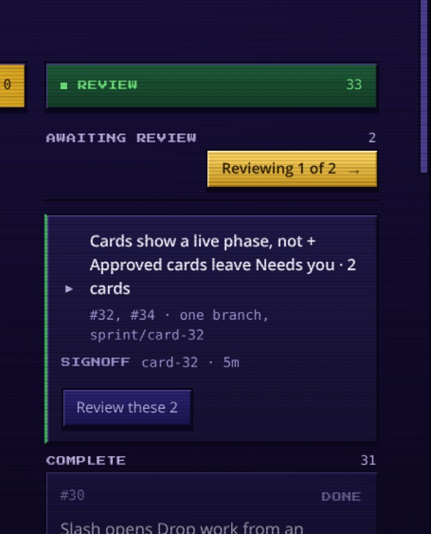

These are four genuinely different shapes for the same job — “here are the things that finished; say yes or no” — not four coats of paint on the row you have now. Each one is filled with the real work sitting on your board right now: the six design-core cards, the two cards on sprint/card-32, #29 and #31 on their own, and #30 which you already approved and is merging.
You said you live on the Chaos board on desktop, so Chaos is what every page here loads in — the real radial canvas, the panel and row gradients, the 2px ink outlines, the bevels, radius zero, Press Start 2P and the gold plate, all lifted verbatim out of web/styles.css. Calm is behind the toggle in the bar if you want the other read. The question is still which shape; the skin is just the room it has to work in — and one of the four does not fit the room. That is noted below.
Pick one, or pick pieces — “B's words with D's keyboard” is a legitimate answer.

What this is: no list. The surface is the decision in front of you — the claim at reading size, what it covers, the checks, the picture, Approve / Send back. The rest of the queue is four quiet lines with no buttons.
Trades: you lose the overview entirely — no cherry-picking, no comparing two branches, and thirteen waiting is thirteen screens.
What this is: a briefing. Every finished branch is a short paragraph in plain English with the verdict as a verb at the end of it. Card numbers, branch, test counts all move to a small last line — nothing leads with a number.
Trades: longest of the four vertically; only works if the summary is genuinely well written, so a lazy paragraph is worse than a good table; poor for finding one specific card.
What this is: the screenshot is the row. A grid of evidence tiles you judge by looking; the words are captions. A work unit is a bracket drawn around the tiles that shipped together, not a title glued out of titles.
Trades: favours work that photographs well — a server fix with three checks and no picture is a text tile in a room full of images — and a screenshot can look right while the thing behind it is wrong.
What this is: mail. Sender is the agent, subject is the claim, snippet is the first check; the row you are on opens in place with the evidence and the buttons. j/k/a/b clears a queue without the mouse; a shared branch is a thread.
Trades: closest of the four to the list of database rows you already dislike — one line truncates the nuance — and multi-select approve edges toward the blind bulk approve the spec rules out.
| Shape | Verdict | What the skin did to it |
|---|---|---|
| A · One at a time | survives | One panel is one dialogue box, which is the most native thing in the whole vocabulary. The headline is the only pixel type and it is spent at 15px — the product's own claim size — so it stays a sentence you read rather than a sign you decode. |
| B · The digest | does not survive intact | B's hierarchy is a big soft lede over smaller prose, and Press Start 2P cannot set a sentence: at Calm's 23px a 60-character lede is four lines of pixel type. Held to 11px it fits, but the lede is now smaller than the paragraph beneath it — the hierarchy inverts. The only fix was to rebuild the lede's authority as a name plate, which is real construction change, not a costume, and it adds furniture to the longest shape. |
| C · Contact sheet | survives best | A grid of framed pictures is what this skin turns everything into anyway. Tiles became inventory slots, the badge became the gold plate with the sheen, the unit bracket became the party frame. Nothing was resized: the only pixel type on the page is the 8px badge and the 8px label, which is what the face is for. |
| D · Inbox | survives, on one condition | Density is D's only advantage and per-row plates would have cost it — a 2px outline plus a 3px bevel on each of thirteen rows is a stack of buttons. The list had to become one plate with ink rules inside it, which is what a 16-bit item menu actually is. What it does cost: dimming. Calm greys a merged row; on purple, grey drops under 3:1, so every quiet state is re-cut from the lilac ramp and the live/settled gap is thinner. |
B at rest, A when you decide — that was my read in Calm, and Chaos changes it. B is the one shape the skin damages: the sentence-as-headline is the whole idea, and this display face cannot set a sentence. If you live in Chaos, the honest recommendation flips to C at rest, A when you decide — the contact sheet is the shape the skin was already built for, and “Review next” still opens A's one-at-a-time panel. You keep the undivided decision and lose nothing but the prose.
If you would rather keep B's words, the workable version is B's paragraphs with the lede handed back to the body face — no pixel type above 11px anywhere. That is a legitimate answer to pick; it just means Chaos gets one surface where the display face does not appear.
D remains the right answer only if the queue is routinely ten or more deep. Today it is four, and dense-and-fast solves a problem you do not have yet.
Every page here runs on the board's own tokens — both blocks copied verbatim out of web/styles.css — and the board's own vendored fonts. No external request, no CDN. Every claim, check step, test count, card number and branch name is real, lifted from the evidence packets on the live board; the screenshots are the real attachments, downscaled. Nothing here is wired to anything: the buttons do not post verdicts. Every 8–13px pairing was checked against the surface it actually sits on — on purple, Calm's greys fall under 4.5:1, so anything small was re-cut from the skin's own ramp rather than carried over.